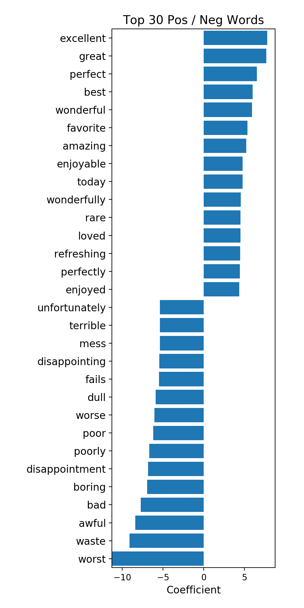
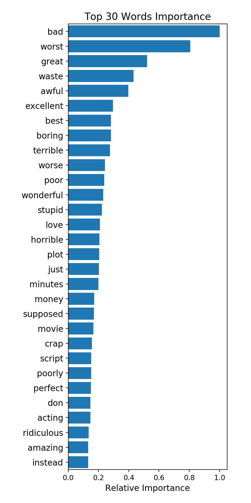

Movie Review Visualization
STAT 542 Project 4 Part II, by Jifu Zhao & Jinsheng Wang
1. Top Positive and Negative Words


The above figures are generated from Logistic Regression
with Ridge Penalty and Random Forest model
2. Detailed Text Analysis
Positive Words vs. Negative Words
id: 001
sentiment: 0
I still wonder why I sat through this entire thing. It only had about 3 minutes of actual entertainment, the rest of it was just a total bore. The acting isn't that great and the action scenes are soooo cheesy it's not even funny. I kinda wish I could say something good about this film but I can't think of anything right now. There probably was somethings in it some can enjoy but the ending of it is gotta be the dumbest idea ever. What type of person would get a little toy remote controlled helicopter with a burned in machine gun in it to assassinate the President? This idea could have never been done in the first place let alone have anyone dumb enough to try it, I guess the writer must have been to obsessed with the toy car scene in The Dead Pool but actually tried to make this look serious.
id: 002
sentiment: 0
As a serious marathoner, I was seriously disappointed in this film. Its target audience is clearly those who have never run a marathon, or novice marathoners. Following the stories of 2 first-time marathoners, one senior, one injured runner, and two elites as they prepare for the Chicago marathon, the film dedicates the majority of its attention to one female beginner whose story is, for lack of a better word, boring. While I did enjoy the brief glimpses into the training sessions of Deena Kastor, the brief history of the Boston marathon and marathoning in general, let me emphasize: These were brief!! Watching some Joe Runners prepare for a Saturday run with their water bottles and talking about how they view the marathon is not inspiring, and the nonstop clichés about achievement and feel-good grinning runners will make you wish the film were about an hour shorter. If you are a first-time marathoner, this film may give you a feeling of "I can do it." For anyone else, run away.
id: 003
sentiment: 1
I generally love this type of movie. However, this time I found myself wanting to kick the screen. Since I can't do that, I will just complain about it. This was absolutely idiotic. The things that happen with the dead kids are very cool, but the alive people are absolute idiots. I am a grown man, pretty big, and I can defend myself well. However, I would not do half the stuff the little girl does in this movie. Also, the mother in this movie is reckless with her children, to the point of neglect. I wish I wasn't so angry about her and her actions because I would have otherwise enjoyed the flick. What a number she was, take my advise and fast forward through everything you see her do until the end. Also, is anyone else getting sick of watching movies that are filmed so dark. Anymore, one can hardly see what is being filmed. As an audience, we are impossibly involved with the actions on the screen. So then, why the hell can't we have night vision?
id: 004
sentiment: 1
A wonderful family movie & a beautiful horse movie. 75+ %entertainment. Casey, Buddy, Kelly Marsh are very interesting and lovable characters. The horses are real beauties.Has the horse racing as a backdrop for showing how luck is sometimes nothing but some good commonsense. Shows how kids can do stupid things for stupid reasons. Shows how adults can do stupid things for selfish reasons. The very realistically portrayed characters transform the unrealistic theme of the film into something everyone can relate to.Andrew Rubin puts in a wonderful performance as Buddy, the sensible elder brother. Somewhat reminded me of Aidan Quinn(eyes, speech delivery, facial appearance). Casey makes you fall in love with the character because of the earnestness. Sarah Blue is also nicely portrayed by Alexis Smith. Lloyd Bourdelle, the father, is played by Walter Matthau and he IS the character.Though there is room for improvement in the movie, its a very enjoyable, feel-good movie.
id: 005
sentiment: 0
This really is a film of two halves. The first detailing the lives and friendship of two boys (one a privileged Pashtun and the other a down-trodden Hazara) in late 70s Afghanistan before the invasion by the USSR works extremely well. The young actors turn in convincing performances and seeing Afghanistan as it once was throws the present situation there into stark relief.The real problem comes when we move into the later phase of the story where we join the Pashtun as a man living in America. Ancient debts to his young friend lead him to return to his homeland and it is really at this point that things break down. The central adult character is clearly supposed to be sympathetic, but in fact comes across as wimpish and wallowing in self pity. It is hard to really care for him and one cannot help but feel that the really interesting story is the one we do not get to see - that of his boyhood friend.Once he returns to Afghanistan the narrative becomes bogged down in a series of highly contrived coincidences. Most remarkably he manages to come across his childhood enemy after all these years almost immediately (even though he is not looking for him), despite the chaos that has since consumed the country. This enables him to confront past demons in a way that is simply too convenient to be credible. The resolution of the narrative is also run through with an awful, mawkish sentimentality which undermines any really serious points the film may be trying to make.Although it is possible to start seeing characters and the abuses of their lives as symbols of a state which has been torn apart by world politics it is hard to really see this as a film which engages with any wider political discussion. Instead the narrative becomes reduced to one character's emotional journey of self discovery and healing. Unfortunately this character is so dull and wrapped up in himself that it is hard to really become engaged in his story, while opportunities to make a really interesting film about Afghanistan itself are wasted.
id: 006
sentiment: 0
What is often neglected about Harold Lloyd is that he was an actor. Unlike Chaplin and Keaton, Lloyd didn't have the Vaudeville/Music Hall background and he wasn't a natural comedian. He came to Hollywood to act; and he discovered he had a knack for acting funny -- first in shorts, then in features. He made a name for himself as "Lonesome Luke", a Chaplin knock-off; with the "glasses character" that made him the all-American boy rather than a grotesque, Lloyd found his stride and his movies became some of the best produced during the silent era.He developed a reputation as a "daredevil" in some shorts, and retained this in some of his best movies ("Safety Last", "For Heaven's Sake", "Girl Shy"). He was more popular than either Chaplin or Keaton during the twenties and he became very rich before the advent of sound.The first sound movies were often disasters. To get the most out of their "sound", too much dialog was used in many movies.Lloyd's acting skills were, after two decades, geared for silents. He didn't have a bad voice; its high pitch suited his "glasses" character. And his sound films weren't the unqualified disasters of legend. Yet silent movies had been raised to a high art (especially Lloyd's, which did not stint on budget and were extremely well-crafted); with the introduction of talkies movies had to learn to walk again and they made some missteps.Though he tried to move with the times and embraced sound, Lloyd's best bits from his early (overly talky) talkies were still visual -- such as the scene in "Movie Crazy" where he appears to be riding in a swank car, but actually "hitched a ride" on his bicycle.Trying to recapture the daredevil antics that made him famous, as he did in "Feet First", was misstep. (In "Safety Last", his best movie and the one that, deservedly or not, shoved Lloyd in the box as a "daredevil comic", he played a determined young man, climbing to the top. "Safety Last" had a natural structure that ascended to his character's scaling the side of the building. He was obviously afraid, but his fear added to the humor. In "Feet First", he arrived in a precarious building-scaling position by accident; his frantic cries for help detracted from the humor. His character was pathetic and cringing, aspiration to save his neck -- possibly an accurate statement of the 1930s, but not amusing).Harold Lloyd was not mired in the past, like some wacky Norma Desmond. He embraced sound and tried to take his movies in different directions, growing and changing with the industry. When "Feet First" failed he left the daredevil business and made a satire on the talking movie industry, "Movie Crazy". Just as he had to flounder through many movies as "Lonesome Luke" before carving his place in movie history with the glasses character, he had tried several directions in sound movies before hitting his stride in sound, which he did with "The Catspaw".In "The Catspaw" he plays a missionary's son reared in China who unwittingly gets elected mayor as a front for corrupt political interests. When he finds out the truth, he sets himself the task of cleaning up the town. Only in his early forties, Lloyd could still act the brash young man.Yet "The Catspaw" was another box-office failure, and Lloyd made only three more movies, including "The Milky Way". Of his chief competitors, Chaplin still had silent movies in him and Keaton was hopelessly mismanaged. "The Catspaw" and "The Milky Way" suggest Lloyd might have mastered sound comedy if he had been a little younger, or if audiences had given him the benefit of the doubt after his early sound fiascoes.Though the movie has been unfairly maligned about the way Lloyd's character cleaned up the town, it suits him. From his days in "shorts" Lloyd wanted to scare his audience, and the climax of "The Catspaw" achieved it yet again, in a surprising way; until the trick is revealed it appears gruesome, and then come the laughs.Viewed as a product of its time, "The Catspaw" is charming and funny. A very well-written sound comedy, well-acted by Lloyd. Directed by Sam Taylor, its curious blend of drama and sly humor make it look almost like a Frank Capra or Preston Sturges comedy.
id: 007
sentiment: 1
15 PARK AVENUE is the address "Mithi/Mithali" (Konkona) is in search for from the movies beginning. "Prof.Anu" (Shabhana Azmi)is Mithi's extremely caring and loving half sister from Mithi's mom's earlier marriage. The movie revolves around these characters and looks into the life of a schizophrenic patient (Mithi). The director tries to explain to the viewer the imaginary world of Mithi, through her continuous blabbering to Anu and others. Konkona deserves not one but thousands of awards (which I am sure, she will be getting)for this rendition of Mithi in this movie. You can see the look of a patient written on her face, by the drooping lips and sleepy eyes, from the first scene itself. Rahul Bose has done a good job, but has been reduced to one half of the movie in spite of his importance in their life.Watch out for the intense relationships shown between the characters of the movie, Mithi & Anu, Anu & Anu's Mom and between Anu & Sanjiv (Kanwaljit Singh). Shabhana Azmi, as usual has done a riveting performance to be remembered as the sister, who sacrificed her life for Mithi.The movie might not be your usual Hindi potboiler, but can certainly make people look at the schizophrenic patients in a different light altogether.As usual, Aparna Sen brings the movie to a different ending rather than any clichéd ones, we might think off. Hats off to her, for this great movie!!!
id: 008
sentiment: 1
If you like Madonna or not, this movie is hilarious!! I am a Madonna fan and did see this in the theater at the time of its release. However, over time it has not lost its silliness and pure fun. Sure there are some bad lines & cheesy acting but the whole film is just a screwball comedy with Madonna actually carrying the whole film with great bombast. She is cute, funny, and is the only comedic role of her movie career. Madonna usually just plays 'herself' in roles but watching her as Nikki Finn in this film, she really seems like somebody else for once. Of course the film is directed by James Foley (who filmed the dramatic and haunting 'At Close Range' with Sean Penn & Christopher Walken) and co-stars Griffin dunn ('After Hours') who is also brilliantly cast and has fun with the material. The story is nothing genius and don't expect some climatic ending but if you are ever in the mood to watch a fun, clean, 80's romp or if you are a Madonna fan than this is a MUST SEE. The Soundtrack is also very notable and contains 4 Madonna songs: the #1 hit "Who's That Girl", the #2 hit "Causing A Commotion" and the beautiful and one of her best ever ballads "The Look of Love''(Top 10 Hit in the UK) and "Can't Stop" a left over pop ditty from the 'True BLue' sessions the year before. It is only on VHS but will soon be available on DVD.
id: 009
sentiment: 1
There are many film now on DVD, but producers had forgotten some tittles of importance to many moviegoers. The Egyptian, along with El Cid and other favorites of the era of the wide screen, big budget epics had merit. Many people from my generation learn a lot about history of Egypt, medieval Spain and even the Incas, (The first time I heard from them was a very cheap adventure movie with Charlton Heston called The Treasure of the Incas), same happened to me with Egypt, or Rome seen many "bad" epics of the era. many production values, excellent use of color (The De Luxe color was more Brigit and sharp that the ordinary Technicolor), maybe the cast was wrong but in any case, the film did manèged to give us idea of the life in ancient Egyptin and was in a way the motor to go out and buy the novel, my Mika Waltari, one of the best, if not the best historical-novel ever published. Also oust anding was the superb score by Alfred Newman and Bernard Herrmann. I saw this film many times when I was a boy, it was not the big box office hit that Fox studios wanted to afther The Robe enormous hit, in CinemaScope and Stereo was a wonderful eye popping sp4ectacle. I have the Lasser Disc version.m the only way to see Ito its wdisescreen format. Soon i Hope will appeared.
id: 010
sentiment: 1
They have taken a story dear to the people of Edinburgh's heart, a true story and changed it as Hollywood has done before to many a tale. The end result is a movie however well done for those how do not know the story yet totally different and inaccurate. The original movie of this tale that Walt Disney himself oversaw used the right breed dog that is crucial for this tale and did not make that John Grey was anything special he was a poor Shepard who died in poverty at the inn. If you like the story, watch the Disney original for a better heart- warming story. It's a Shame the cast and the potential was there for a terrific remake of a classic tale. Read the book for an accurate occurrence of the story. And if you really like it, you can visit the real Kirkyard in Edinburgh.
id: 011
sentiment: 1
In 1904 Tangier, a wealthy American woman and her two children are kidnapped by Berbers, murderous desert pirates who scorn the Moroccan government and, by doing so, kidnap "American pestilence", which attracts the attention of U.S. President Theodore Roosevelt. Fictitious historical epic is less a grand adventure than it is a peculiar, somewhat exhaustive throwback to the desert-sheik films of the 1940s (with a bit of "The King and I" interjected, besides). Portraying the cloaked, mustachioed, bloodthirsty leader and his snippy, haughty captive, Sean Connery and Candice Bergen could be acting in two entirely different movies (neither one seems to know how far to carry the camp-elements of their characters and dialogue, and both seem singularly without proper direction). The various (and anonymous) slashings and beheadings which occur are arbitrary: we don't know any of these victims, and the big action scenes become blurry, noisy montages of sand-swept violence on horseback. The pluses: a much-lauded music score by Jerry Goldsmith (Oscar-nominated, but a loser to John Williams' "Jaws"), fine location shooting and cinematography. *1/2 from ****
id: 012
sentiment: 0
"Priscilla, Queen of the Desert" is always being trotted out as a masterpiece of Australian cinema. I found it quite disappointing. The lead actors are great - Terence Stamp is aging beautifully, Guy Pearce should do more comedy instead of the dour roles he chooses and I've been a fan of Hugo Weaving since I saw him play Oberon eons ago. The cinematography is great, but if you've ever been to the Australian outback, you'd know that the air is so clear and the light so brilliant that they could have shot it on the movie equivalent of a Box Brownie and it still would have looked spectacular.So what's my problem? Well, three things. First, there is not a sympathetic female character in the whole film. A woman who has to earn her living shooting ping pong balls out of her privates in a roadside pub deserves our sympathy. Tick's wife doesn't get much better treatment.Second, the scene when they sing "I Will Survive" to a group of Aboriginals is offensive. To try to draw any sort of parallel between the struggles of drag queens and trannies and the almost total destruction of Aboriginal culture, which is what I assume the scene is supposed to do, shows a level of historical understanding worthy of Paris Hilton.Last of all, and the greatest defect of the film is that it just isn't funny enough. Did Stephan Elliott actually talk to any drag queens when writing the film? Anyone who knows a drag queen (or three or four) knows that most of them have rapier-like wits and they're not afraid to use them. Now, I can understand that a lot of drag queen banter probably would have got the film refused classification but Elliott should have been able to gather enough "fit for the kiddies" material to complete his film.So, all in all, a waste of a good idea and a great cast.
id: 013
sentiment: 1
This short movie intends to focus on one issue sociologically known as cultured shock. the film presents the condition of average Romanian in democratic Romania who finds out that the life and the problems are not different from Communist period, and if you want something, you must bribe around to get it.So, our main character is fired after a long while, he is around 50 and needs to get a similar job, but the only job available is one inferior. He is forced to take it because the lack of money.My opinion is that you have to live in Romania so that this movie can be as real and tragic as it seems.
id: 014
sentiment: 0
Do you ever wonder what is the worst movie ever made? Stop wondering. I'm telling you, Michael is it!It is not "heartwarming, " "entertaining, " or "Travolta at his best." It just sucks. If I had kids, I would let them watch Deep Throat before Michael!A sold-out John Travolta, a washed-up and balding William Hurt, and an about to die any time now Jean Stapleton highlight this turd of a film.But wait...you'll get to hear Andie McDowell sing! Yeah. Hollywood really s**t all over us with this one!
id: 015
sentiment: 1
The story of Sweeney Todd evokes memories of the work of classic writers like Charles Dickens, and more contemporary writers like Edward Gory. As a musical, it naturally becomes more like the musical Les Miserables. Both deal with the grim effects of poverty in the Industrial Revolution, and the breakdown of organized society. But this musical is different from Les Mis in one very important aspect: Stephen Sondheim, the songwriter who can adapt to any style. To be sure, he's had his successes and failures, but one thing about his shows you can always count on: They will be something unique. Who would have thought someone would write a musical about a barber who slits people's throats and makes them into meat pies? Sondheim did, and he did it marvelously. The entire show is set in a factory, to suggest the ever-present catastrophic effects of the misery of those at the bottom of society, and this serves the needs of the show perfectly. The catwalks and railings are moved throughout to suggest streets and walkways and bridges. Techniques are borrowed from Kabuki and Noh, with the visual stagehands and set changes. Then, to top it all off, cast the great Angela Lansbury as the gruesomely practical and humorous Mrs. Lovett, and George Hearn, with his operatic baritone voice, as the murderous Todd, and you've got yourself a stellar musical vehicle. The rest of the cast moves smoothly through the clichés of the love story perfectly, except for Johanna and Pirelli, who sound a bit too forced. If the Johanna and Pirelli from the Broadway show could be here, it would be perfect. Hearn acts while he sings more than Len Cariou on the OBC album, and the accents don't sound as forced here. Through it all Sondheim's score never fails to underline the dark seriousness of the story. As I said, he can adapt to any style. In Follies he imitates the '30s '40s style of showtunes, in Pacific Overtures he captures the subtle art of Asian music, Into the Woods knocks off the 32 bar Disney style songs, and Assassins covers a history of American music. Here, however, he does wonders in making his score distinctly English, from parlour songs to operatic duets and soliloquies to society waltzes to Gilbert/Sullivan style patter. And yet still, the show remains deadly serious, even though it provokes more laughs than any musical comedy. In it still, is a grim warning on the evils of taking revenge. Here is where this movie makes a mistake, in cutting the Judge's solo in which he flagellates himself out of guilt for his crimes. Without it, the Judge is just a conventional villain, and this movie's point is that there are no straight villains. Both Todd and the Judge learn, too late, the horrors of having to accept responsibility for their actions, and Todd loses everything in his obsession. This is well brought out by the chilling reprise of the grim yet rollicking Ballad of Sweeney Todd, ending the show with Todd and Lovett rising from the grave to tell us that the end is the same: in a world full of Sweeneys, vengeance begets only vengeance. "Attend the tale of Sweeney Todd. He served a dark and a vengeful God. To seek revenge may lead to Hell, but everyone does it, and seldom as well as Sweeney, as Sweeney Todd, the Demon Barber of Fleet Street."
id: 016
sentiment: 1
To be honest, I thought this movie would be a Japanese drama. I was dead wrong. This movie is based of the popular Japanese anime novel of the same name. It tells the story of a town that is cursed by the Uzumaki or The Spiral in English. Little by little the towns residents start to slowly become dangerously and violently obsessed with anything to do with spirals and some of the residents start to actually turn into living things the actually have some sort of spiral within them such as a snail.The movie was one giant, random, acid trip twisted with romance and drama. Sort of like a
twisted
drama. What makes this movie disturbing is the ways that some of the people are obsessed with The Spiral. For example: one of the dads has a garage full of house hold objects with spirals incorporated into them, one girl took her extremely long hair and teased to an insanely huge spiral-like style, one kid slowly transformed into a human snail, one man could twist his body into a spiral shape, one woman attempted to cut her ear open to obtain the cochlea inside and one teen ran over himself so that he could be twisted around a car tire and one kid stuffed himself into a washer so he could become a spiral.Another very disturbing aspect of this very well syndicated is the atmospheric tone and the style in which this movie was shot. The camera angles add to the psychotic and twisted story, in other words, a very good cinematography. The overall coloring of this picture makes for a somewhat demented story. The coloring is a blend of lime green, yellow and a little orange and the special effects with some of the spirals are outstanding.However, like many Japanese films, this one has an undertone of forbidden love and romance between a girl and a boy. However, with all the spirals and strange happening going on in the town it is hard to keep up with the relationship of the two teens. But, in some way it is very irrelevant, more like a second hand story that has nothing to do with the actual story of the spiral obsessed town.Overall, I would recommend this film to anybody who likes vastly different and bizarre foreign films. It has just enough wackiness and insanity, it touched me.
id: 017
sentiment: 0
The film is a remake of a 1956 BBC serial called'My Friend Charles', & as such gallops thru the material in a relatively short time.I found it fast moving, enjoyable & unpretentious.Did anyone else notice the scenes, towards the end, where John Mills was being gassed?-the producers obviously decided to omit the scenes-maybe censorship?, but notice when he's sat by the window of the flat, deep breathing closely followed by similar scenes with the car window open. The Francis Durbridge serials all seemed to inhabit the same universe, that of unexplained happenings, people being not what they seem & the villain being someone close to the hero/victim.A predictable universe in some ways, but one with its own rules & regulations.
id: 018
sentiment: 1
Just saw 'The League of Gentlemen: Apocalypse' at a special screening in Manchester, with Mark Gatiss and Reece Shearsmith of the League in attendance.At the back was Peter Kay (who has a brief cameo in the film) affectionately heckling at the back during the Q & A session after the film.The film was complicated (in a good way) and very very funny. It follows Geoff Tipps, Hilary Briss and Herr Lipp as they try and save fictional Rosyton Vasey from the disinterest of their creators.The League play a wide range of their characters and themselves (or character based on themselves) and are ably supported by the cream of British character and comedy actors such as Bernard Hill, Victoria Wood and David Warner.Warner is a particular stand out reminding me of his smooth and cutting turn in 'Time Bandits'.The film swims in and out of various realities and allows some of the denizen's of Rosyton Vasey some space to grow beyond their usual limits of their comedy shtick.Steve Pemberton's Herr Lipp has a great Bretchian moment near the end of the movie and has to make a decision about his purpose and meaning in life which brings a lump to the throat at an unexpected moment and surprises you with its tender affection for the characters.This echoes something Mark and Reece said in the Q & A afterwards, that the plot of the league being tired of their famous characters is spurious and that the whole film is really a love letter to them.For a format that started as a radio character-based sketch show, these guys have really evolved the idea so far as to sustain a movie which takes you on a journey through fiction, 'reality', comedy, tragedy and a pleasing journey for two of the less obvious characters to carry a long form story from their 70 odd existing creations.The fans of the show will love it. It pays off dedication and attention to detail in spades, the uninitiated may be a little lost, but the joy of the LoG was always the ability to almost instantly tune into their acutely observed characters and take the stylistic leap into farce and expressionistic movie homage.There are homages a plenty in this one including 'The Shining' and 'La Belle et la Bete', to name but two I spotted and they ably demonstrate their love for cinema and history with a segment in 1690's England that makes perfect sense when you're engaged with the movie.What can I say, I marvelled, boggled, emoted and snickered throughout and they have definitely pulled off what many have failed at. A successful British TV comedy to cinema translation.If you've watched and enjoyed 'The League of Gentlemen' in the past, go see it; you will enjoy.If you haven't, rent/buy a DVD and then go see it.Well done guys and thanks for the charming and humorous Q & A.
id: 019
sentiment: 0
This review contains spoilers. I didn't have any expectations about this movie. I pulled it off the video store rack with the movie, "White Noise".First, the credits for this stupid movie run about 5 minutes into it. The pacing from start to finish is slooooow. The main heroines don't like to wear a bra and the director appears to enjoy the jiggle effect as Anna Paquin descends the stairs. If you like movies for boobies, this one has a low level buzz factor.Second, it's nice that the movie rips off elements of Lovecraft and other horror genre mechanisms, but in better movies, there is at least some rational or consistently irrational behavior. This stinker tries to establish some sense of modernity and reality but then you have situations where no one calls the police even though they've uncovered a treasure trove of potentially incriminating forensic evidence, and otherworldly rituals are nicely spelled out in a comprehensive book on otherworldly rituals like on Buffy. I was waiting for Miles to show up and give some consultation on how to slay a certain demon type of so and so.The premise is that it is possible to open up an age of Darkness where creatures that crawl on the ceiling can cut your throat or turn the meat grinder effect on you. Ho hum. To do this you need to have a sacrificial circle and then have seven kids who must have their throat cuts by people who love them. This opens the world to the age of Darkness. At least that's what it says in complete detail in the book of ancient occult rituals. Which raises the annoying question of, uh, well, how did the ones who wrote the book know, and, if this is what happens, would you really leave this information in a book you can take out from the library, much less get it from a library in a world that is not covered already in Darkness, an age brought on by lunatics who could have performed this like much earlier using the "Occult Practices to Bring the World to Darkness for Dummies, 2nd Edition"? It turns out the father in the story is the 7th child, the one that ran away from the ritual 40 years ago; he was released by his father, who is the doctor/grandfather in the movie, who wanted to try the ritual with presumably, other stupid parents, who just wanted to see if dumb sh*t like this opening the world to darkness actually works. The grandpa let the father go because he "didn't really love him". Aduh. Stupid stupid movie written by a moronic director who appears to think he's some kind of Eurofilm Auteur. There's also a scene in the movie where the kid appears with big welts on his face and the mother grabs him and has this total lack of reaction. The whole movie is like this. People seeing really weird sh*t going on and not reacting to it in any sort of normal way. Must be bad plot and direction.Anna Paquin does her best to play her character realistically without cracking a smirk, and she does look smashing in a halter top, but at several critical moments in the story, her character doesn't bother to call in for back up. You know, more of the same, "I will walk into a likely demonic evil situation without any knowledge of defense or help from others carrying flashlights or firepower even though I sense impending doom." And even dumber as it may seem, even if you bring on the age of Darkness, these creatures who make you bloody can't attack if you have a light source, but they appear as people you know, and tell you to turn off the light source. Reminds me of the video game "Alone In The Dark"; maybe this movie is a rip off of that game's concept.The best actors in the film are the young kid and Anna. They both die at the end. The entire family dies. The Darkness creatures lead them to their death, but really, the stupidity of the characters in the family was the main cause of death. The other adults could be interchangeable with any other actors from the Red Shoes Diaries series of fine cinema.So to wrap up, the worst things about this movie are the stupidity of the characters in bumping around blindly in an obviously abnormal situation, the really crap plot (there is an old architect in the story who designs a house with a sacrificial altar hidden in it - the architect has suspected from the beginning there would be occult sacrifices in the house but doesn't tell anyone because, well, no real reason, they couldn't find the kids, but he didn't bother to tell authorities about the HIDDEN ROOMS which he designed into the house but he does like to hang around the house for a 40 year period because he worries about what is going on inside...derrrrh...duuuuh), the hackneyed use of scare mechanisms (more children standing around in the dark or only showing up in photographs, and blood on the wallpaper), and the egotism of the director which when you see him in the DVD features describing his crap work as a new and original rendition, makes you understand where the real horror of this movie lies.Is it entertaining? At 2x speed on a DVD player with the subtitles turned on, it can be entertaining, until your reach the end and realize the movie is crap, otherwise it draaaaaaaags on. The cinematic equivalent of a fatty shake; the empty calories are horrid.The movie gives the feeling the director must have seen "The Ring" and wanted to attempt to create something similar in mood, which in this respect, the film fails miserably, and so, also, in this respect, Jaume Balagueró, it is my opinion that you suck at what you do.
id: 020
sentiment: 1
When I saw this film the first time I was very impressed concerning the kind of atmosphere the director creates. It is also very interesting to see how they imagine the near future in the year 1974. If you see the film you will see a lot of sets and customs which are called freaky and modern again today.The topic of the film deals with the old question "What is real and what is illusion?". If you see "The Matrix" you will find a lot of similarities. But the two films are not comparable at all because "Welt am Draht" is art and "The Matrix" is entertainment. If prefer the first one.Unfortunately I lost my video copy of it.
id: 021
sentiment: 0
I went to see this movie at the theater and paid money thinking it would be at least mildly entertaining. The only thing I enjoyed about it was when Robin Williams crashes into the car at the bottom of the hill, and the end, when he seems to get killed. Glenn Close was obnoxious, and she obviously did not seem old enough to be Garp's mother. A mother like Garp's would have had her kids taken away by the Department of Children and Families. Robin Williams and his glazed donut look of benign goodness is just too sweet and smarmy for me. He has two roles he can play: Funny person or sad, tragic, good-hearted victim. See the Fisher King, Good Morning Vietnam, and all of his so-called "dramatic" roles. It is always the same performance. Put them all together into one long mini-series. Glenn Close is always a cold fish. Remember Fatal Attraction? Would you have an affair with her even on your worst day and if you were single? Did you feel any sparks between her and Michael Douglas?? Have you ever seen Glenn Close warm up any screen?? John Lithgow had the only interesting role. This was back in the day when he used to play serial killers and bad guys, so seeing him as a transsexual was at least funny. Garp is made for all those people who love to see movies about sick, abnormal, dysfunctional people and then claim it is beautiful and profound.
id: 022
sentiment: 1
I thrive on cinema....but there is a limit. A NAME isn't enough to make A MOVIE!. The beginning of the movie puts us in a mood to expect the unseen yet. But we remain hungry ( or angry..) till the end . Things are getting so confused that I admit that I DID NOT UNDERSTAND THE END or was there an end to this nonesense. The opportunity to make an outstanding movie was there but the target was totally missed. Next...
id: 023
sentiment: 1
i am not exactly how sure the accuracy is with this movie, but i can tell you that i was thoroughly entertained by this movie. the character of gust, played perfectly by Phillip Seymour Hoffman, was one of the most unique, yet entertaining characters in recent memory. this movie informed, yet managed to avoid preaching to the audience. it made me laugh, made me sad, made me feel alive, and glad to be spending the time to watch the movie. it takes no time to understand what is going on, and takes you on a roller coaster ride of genuine, human emotion. i thought i knew my history, apparently i didn't know it at all! i give this move 9 out of 10, and recommend it for all adults, and young adults, and the young at heart, just not the young. but as soon as they are allowed to see "r" rated movies, make it a priority.
id: 024
sentiment: 1
Low-budget but memorable would-be shocker that instead emerges as theater of the bizarre. Vulnerable, naive nurse Charlotte Beale comes to a secluded mental hospital and is completely unaware that the only sane people have been murdered, despite the red flags that are constantly being raised all around her. The lack of a decent budget really gives the filmmakers little more to go on than a sense of style, as well as a cast of wacky characters. The pleasures of this film don't come from the film's shocks, which are fairly tame, but from the weird atmosphere. First we have the delusional woman who thinks her baby doll is real. There's also an axe-murdering judge, a shell-shocked war veteran, and old Mrs. Callahan is like everybody's daffy elderly grandmother gone amok. A young patient named Allyson gives the term "nymphomaniac" new meaning. A big guy named Sam is just a little slow after a botched lobotomy, and Jennifer vaults suddenly between catatonia and violent outbursts. The only other sentient person in the place seems to be Dr. Masters, but does she have a secret?"Don't Look in the Basement" is a great example of low-budget exploitation films. There isn't much plot going on, but the cheapness works for the movie. Several cast members turn in memorable performances, particularly Betty Chandler and Annabelle Weenick, and the way the director adds little weird details to the movie can really stick with you.The scene between Allyson and "the telephone man" is a classic for all time, and especially delicious are the facial expressions of Dr. Masters when she begins to go over the edge near the finale of the movie. Brownrigg also makes great use of the cheap soundtrack, with several musical cues really evoking the characters that they accompany. My favorite cue is the "crazy" cue, a sitar that twangs whenever one of the patients does something pathological.Also wonderful is the way that Charlotte herself plunges into hysteria at the climax, with the patients revealing that Dr. Masters is simply another inmate, and then suggesting that CHARLOTTE is also a patient who is being allowed to act out her delusions (she certainly has a tenuous grip on reality, why else would she not question the ominous lack of phone service or outside contact?). The scene where Charlotte manages to finish off the barely-alive Dr. Stephens with a toy boat has to be one of the greatest moments in low-budget horror. Yes, "Don't Look in the Basement" could very well be the "American Beauty" of Grade Z trash.
id: 025
sentiment: 1
Take someone you love or want to love and go see this film.It touches you in all the right places.All the other reviewers here have said it all.Perhaps the cynical will not be impressed.They only seem to like the stuff that leaves you depressed for days.This film is Ga-run-teed to stay with you for life.I am so gratified that the Director is not USC trained.This validates my premise that there is too much mediocrity and conformity in film these days.It is because of the USC lockstep mentality and inbreeding.Hooray for Jeff Hare and Richard Marcus, cast and crew. Well Done!
id: 026
sentiment: 1
I was surprised how much I enjoyed this. Sure it is a bit slow moving in parts, but what else would one expect from Rollin? Also there is plenty of nudity, nothing wrong with that, particularly as it includes lots of the gorgeous, Brigitte Lahaie. There are also some spectacularly eroticised female dead, bit more dodgey, perhaps, but most effective. There is also a sci-fi like storyline with a brief explanation at the end, but I wouldn't bother too much with that. No, here we have a most interesting exploration of memory and the effect of memory loss and to just what extent one is still 'alive' without memory. My DVD sleeve mentions David Cronenberg and whilst this is perhaps not quite as good as his best films, there is some similarity here, particularly with the great use of seemingly menacing architecture and the effective and creepy use of inside space. As I have tried to indicate this is by no means a rip roaring thriller, it is a captivating, nightmare like movie that makes the very most of its locations, including a stunning railway setting at the end.
id: 027
sentiment: 1
Picture the scene: A bored student with an empty day ahead, A video shop with a special offer of 5 video for a week rentals. This ex-student usually just grabbed a pile of videos of dubious quality for the most arbitrary of reasons (The Turning anybody?). Occasionally the odd undiscovered gem did make it into his VCR - this being the case with this film. Everything about the film is good, but much more than this the parts all mesh to provide something all too rare - a cracking good film. Why this never got a UK cinema release is beyond me, especially when we consider the crap that we have to wade through at the multiplex week on week. Whilst I'll happily accept this isn't Oscar material (but neither was sodding Titanic - schmaltzy cgi-tinged bollocks) it is a an extremely enjoyable film. I was trying to think of a way to describe how best this film should be appreciated/accepted - The perfect film to watch while bonding with your Dad, after a coming home for the holidays, after a large Sunday lunch.
id: 028
sentiment: 0
Milo is a complete rip off of the 1992 slasher flick Mikey, if you actually check it up both films have the same tagline!But if you want to watch an incredibly funny film with absolutely no plot whatsoever......well then this is the film for you.The acting is terrible and the flashback scenes are overwhelmingly confusing. The story behind this atrocity is simple Milo Jeeder is a kid with serious family problems, his father is an abortion doctor who keeps unborn feoutus's in a jar (NICE!) and was desperate for a child of his own, he figured out a way to bring one of these aborted children to life and he named him............. MILO!!!!!Aside from all the Bad Acting, Terrible directing, annoying sound of Milo's voice and the ear piercing sound of the bell on his bike , if you take away all that badness its still a bad but funny attempt at a film.I'll give it a bank busting 1 out of 10
id: 029
sentiment: 0
I come from Bangladesh, and here, C.C.Costigan is a goddess of awesome sex. All kidding aside, a friend and I were awake in the middle of the night, watching movies on the Encore: Action channel, when we came across a series of sci-fi-esquire flicks. There was RoboCop 2 (not bad, ...not bad at all) ... then Judge Dredd, (Stalone almost ruins his career) then a movie called Lethal Target. One would think the title "Lethal Target" could only be awarded to a really cool, and really cheesy Rambo knock-off. But nay, what is delivered is what I would like to call a "Semi-softcore, semi-pseudo action, semi-sci-fi film" ... actually, I think I can say that this isn't even a film at all. If it wasn't for the main character's sheer hotness, my friend and I would've turned off the movie as the opening credits rolled.I have a few questions to the people (I wouldn't even dare say "professionals") who made this film. -One, In the future, why are they using the weaponry we used in 1999? Oh, wait, I get it, it's all that they could get their hands on, ... right???... well then, .. why is the main character wearing what looks like a normal everyday linen shirt and a vest, kinda like what people wore in the late nineties? .... oh ... I get it ... in space, it MUST have been a fashion statement.... well, then... WHY, OH, WHY does the main character pull out a 3.5 floppy disk at one point in the film so that she can upload some bullshit ?! wtf !? ...we've progressed so far that we have space travel, but we still haven't progressed past 1.44megabytes of space..?I guess I'm just asking for too much.Question two, Let's just say...that yes... this is a softcore porn. Then why is there only ONE real sex scene, and why does it last for 2 minutes?I mean, you're taking the REASON people are staying up in the middle of the night to see this crap (dare I say 'movie' anymore?) ... and whittling it down to 2 minutes. Hell, they should've just taken that sex scene and sold it to another porn movie, and they would've STILL made more money off of this "crap" than they did.C.C.Cortigan is hot. And no offense to the actress, but she acts about as well as I do. and I'm mentally retarded, and only have one testicle... (C.C. Cortigan, ...e-mail me ...we'll have lunch) I would write more, but I've run out of space.
id: 030
sentiment: 0
I bought this movie from a market stall three years ago.. I gotta hand it to you when I sat down and watched it.. I thought 'OK! This is gonna be another big action B-movie..' Obviously I was wrong.. While watching this film.. I began to realise that this movie was taking me to another planet.. full of cr*p!I began to get really bored and fed up with this film.. Although I wanted to see was gonna happen in the end.. I really felt like it was really getting on my nerves..The people behind the film may've brought some well known name actors into this project.. But what were they thinking..? Even these actors couldn't save this film..At the end of the film.. I felt like this was a waste of money.. just buying this low life sucker of film for a small amount of money. A few months later, I sent the tape off to charity.. I didn't want to see it again..Sorry! But if you're thinking of watching a movie and then nodding off to sleep.. I can highly recommend it you.. Me? I'll rather go on Pro-Plus and watch something decent..!Disappointing 1 out of 10!
id: 031
sentiment: 0
"Destroy All Planets" winds up settling for 'destroy all Tokyo' by film's end, as a space monster resembling a giant squid falls to the reptilian furnace known as Gamera. Actually, Gamera is saving Earth right from the get go, knocking out Varian Space Ship #1 even before the first set of film credits roll. The scene switches to a Japanese scout camp where we meet a pair of meddlesome young heroes, Jim and Masao, who take part in Gamera's exploits after being kidnapped by the aliens and beamed aboard their ship in an electrified bubble shield.It's pretty startling to see the boys convince a scientist to let them operate a newly invented submarine that might be defective. Previously boy genius Masao had wired the unit to run in reverse direction of it's controls, but Dr. Dobie didn't think about checking that out as a possibility. At least that prepared the boys for interfering with the alien space ship's controls by playing switcheroo with a bunch of triangular blocks.When boss alien Viras says 'Activate the Videotron', hang on to your seats for rehashed footage from earlier Gamera movies where he battles Barugon and Gyaos. These take up quite a bit of screen time, but are no match for the fast forward button if you want to get on with it. For the longest time Viras addressed an invisible crew, and when they finally appeared, they were Orientals who could fly - imagine that!Seeing as how these movies were made for a juvenile audience, it's surprising to see how gruesome some of the scenes are. Gamera drawing blood comes to mind, and how about the pair of space crew members being decapitated. When squid tentacles started emerging from the headless bodies I made a connection to the 'Alien' films; having the individual units merge to form the giant Viras was a neat device.I guess the appeal for young kids might reside in identifying with the two young heroes who make friends with a giant monster, move around pretty freely on an alien space ship, and get to have whatever they want with the help of alien telepathy technology. Seeing as how the movie was presumably made by adults, it could have been a simple case of wish fulfillment.
id: 032
sentiment: 1
Another of the endless amount of cookie-cutter 'Kickboxers Fight to the Death for the Amusement of Wealthy Scumbags' films that there were so many of in the 90s... Y'know, the ones created by taking the words 'Death', 'Blood' and 'Steel' and the words 'Ring', 'Fight', 'Match' and 'Cage' and putting them in a random generator! Saying that though, Death Match is a pretty good entry in the over-used genre, thanks to its exciting fight scenes and the surprisingly good acting of its kickboxer cast.The story concerns two buddies - ex-Kickboxing World Champion John Larson (played by pug-faced Middleweight Kickboxing Champ Ian Jacklin, probably previously best known for his awful performance as the main villain in Ring of Fire 2) and Nick Wallace (Nick Hill, a likable guy probably best known for the role of street-fighter Sergio in Bloodsport 2) who work the L.A. docks loading crates onto ships. One discovery of a boxful of guns and a brief fight later, our two heroes are jobless and propping up an L.A. bar. Sensible John Larson decides to head North and look for a job; headstrong Nick Wallace has heard of a guy paying good money for fighters to fight in private kickboxing matches. "Why should things change?" says John, " If you need me, i'll be there." Predictably enough, it isn't long before Nick has gone missing and his good friend is fighting in the deadly 'ring of death' trying to find a lead to his missing buddy.Sure enough, there are no prizes for originality here, but like i said before, this films strength lies in its action, its cast of real-life fighters and the fairly good performances it manages to wring from them. Ian Jacklin in particular surprised me. Previously i'd just seen him as the bad guy in Ring of Fire 2 and in bit-parts in tripe like The Steel Ring, and i've always been quite amused at how bad an actor he is (good fighter though!). But in Death Match, he's pretty good! Given a decent script and a haircut, he proves himself to be quite the charismatic leading man! And his friendship with Nick is very well portrayed. Jacklin and Hill have a nice chemistry and you really believe these two characters care for each other. Enough for one of them to lose a job, travel halfway across the country and risk death to save the other - I wish i had a friend like that! It was also nice to see Matthias Hues as a villainous henchman with a little more depth than we're used to seeing from his many 'villainous henchman' roles. However don't be fooled into thinking he's the star just because he's on the video cover (with, it seems, his head stuck on the body of Michael Bernardo from the cover of Shootfighter) - he is good while he's on screen, but he isn't on much..On the negative side, the film is pretty slow when there's no fighting going on, with lots of unnecessary scenes (whats with gangster Jimmie Fiorello's pointless story about his grandfather??), and the end fight is disappointingly short, but on the whole i enjoyed it! Plenty of fights, most of them good. Isn't that all we martial arts really need? And of course eye-candy, here in the lovely form of the very pretty Renee Ammann. All in all, a pretty entertaining kickboxing movie.
id: 033
sentiment: 1
When the film started I got the feeling this was going to be something special. The acting and camera work were undoubtedly good. I also liked the characters and could have grown to empathise with them. The film had a good atmosphere and there was a hint of fantasy.However, as the film went on, the plot never appeared to takeoff and just rolled on scene by scene. I was unable to understand the connection between the stories. All I could see was the characters occasionally bumping into each other and references to ships in bottles. Without that connection, I was just left with a few unremarkable short stories.Am surprised it did so well at Cannes
id: 034
sentiment: 1
I consider myself a huge horror movie fan. One night I wanted to just rent some newer horror movies to make fun of. Then, I rented Milo. I was so surprised by this movie. It scared the hell outta me. That's not something I can say very often. Usually Halloween only scares me.Two other friends watched it with me, and were left with a disturbed feeling. A good feeling, if you ask me, after watching a horror movie. If you are unaffected, then what's the point.This movie was original. It didn't follow the normal guidelines of a horror movie. That's why movies like Valentine bombed for me.Of course, many are left with unanswered questions, as most horror movies do. It is worth the rent though.
id: 035
sentiment: 1
Seen all 4 installments, this one is by far the best of all. I did'nt have much expectation when I got the DVD(3rd was such a drag), but to my delight this one was fast paced with some slick punch-lines.Don't miss this one.
id: 036
sentiment: 0
If I compare two films with Sacha Cohen, Borat and Ali G then Ali G is immeasurably better. I'ts no master piece, but it's a film at least. Borat is complete garbage and I do not understand how it rated better then Ali G.I cannot put my finger on it, there something wrong with the Ali G script: half of the jokes are as if written by a 15 years old, not by an adult scriptwriter. And a number of jokes including Mr Cohen's lower body are quite tasteless. But the film actually comes together as a comedy and there are some valid jokes too that are funny: such as how Ali G becomes a member of government for doing something scandalous and stupid in the public (sadly true in today's western society: people get careers for doing stupid things in public), also Ali's advice about immigrant policy and some others. Ali G overall remains a sympathetic character, even though a kind of mentally underdeveloped for his age. But it's OK to watch, it's quite funny.But never ever watch Borat, it's awful and makes every intelligent movielover sick.
id: 037
sentiment: 1
One of the enduring classics from MGM came out in the closing years of World War II, it's the film that made young Elizabeth Taylor a star. She had done a few films as a child actress before National Velvet, but when it came out her place in the movies was assured. Ironically enough biologically she'd be growing up fast enough after National Velvet was out and her next struggle as an actress was to get substantial adult roles because casting directors only saw her as innocent little Velvet Brown who loved her jumping horse.I'm not sure of how this would work because steeplechase horses have to have confirmed bloodlines and the Pi's are a subject not dealt with in National Velvet. All we know is that he's a reckless and untrainable horse in the hands of Reginald Owen and after he breaks free and causes considerable damage, Owen gets rid of him for a nominal price to the local butcher Donald Crisp.At the same time as these things are happening, Mickey Rooney comes wandering into the lives of the Brown family which consists of Crisp, wife Anne Revere, and daughters Angela Lansbury, Juanita Quigley, and Elizabeth Taylor and their little brother Butch Jenkins. Rooney is a former jockey who's now on the open road and heading for the Brown family where his father was once a horse trainer for Anne Revere's family. It's he who sees the potential of the Pi (short for pirate) as a steeplechase jumper and it's Elizabeth who convinces Crisp not to pass up this chance.Elizabeth Taylor was so sweet and innocent in National Velvet. The Good Book says you have to have faith like a child and she has it to spare. She infuses Rooney with it, to have faith in the heart and ability of the Pi and to leave a little over for himself.Anne Revere won a Best Supporting Actress Award for National Velvet. She's a very wise mother who has hidden depths to her that the audience doesn't suspect. It turns out that back in her youth she had a taste of fame and glory swimming the English Channel and her prize money, saved all these years, she gives to her daughter. That scene is probably what won her the Oscar. National Velvet also won one other Academy Award, for Film Editing.Over 60 years after it made its debut National Velvet as a family classic hasn't lost a thing. Its depiction of life between the World Wars in Great Britain is still a standout. And National Velvet launched a movie legend. Can't do much better than that for high regard.
id: 038
sentiment: 1
This is a funny film and I like it a lot. Cary Elwes plays Robin Hood to a tee. This is, of course, the usual good vs evil with Robin against the evil Sheriff of Nottingham. The humor is sort of in your face stuff for the most part, but still works well. A comedy for a night when you don't want to have to think much, it's well worth a rent!
id: 039
sentiment: 1
I really like the show!! As a part of Greek Life, I can say that some things are over-exaggerated, but overall it's still pretty damn funny.Rusty is a likable lead character, his roommate is HILARIOUS and the entire cast is entertaining in their own rights. I like that it focuses on individual situations as well as interpersonal relations with the organizations.This show covers it all, and they do it without cursing or anything else that bad (how else could it be on ABC Family?).My favorites are Cappie (of course), Rusty's roommate and pretty much all of Kappa Tau. This show is a great launch pad for them and I'm excited to see what doors this opens. Please renew this show next summer, ABC Family. Like I said, love love LOVE it!!
id: 040
sentiment: 0
Oh f*cking hell, where should I start... First of all; this show is just another stupid American non-funny so called comedy which has pathetic acting and very very poor humor. The American way of laughing-track business makes the whole thing even worse. How come I can hear laughter, yet there's nothing funny happening? Pretty stupid, eh? This show is only for those American people who haven't ever heard that there are far more funnier, better and wittier comedies - not only in Great Brittain, but also in America (The Simpsons for example). I simply can't understand what is so good about "Reba" that it has lasted for long a while in television. It has nothing new to offer, it underestimates the (possible) viewers in so many ways and it simply isn't funny at all. I could have lived with the fact that there are so bad shows as "Reba", but why the hell they had to run it here in Finland. If I see few seconds of this horrible show the rest of the day is ruined for me. Take my word and believe me - this show sucks ass even more than these kind of American "comedies" usually does. This is simply horrible. Do yourself a favor; don't ever watch this peace of sh*t. Well I leave the commenting for those who now this language better. Thanks for your (possible) interest.
id: 041
sentiment: 0
What a boring movie. While it did have humorous parts, it was just plain boring and lengthy (for a 90 minute movie). I believe that the cause was a lack of action.When I rented this movie, I expected to see white blood cells combat the evil viruses, but no such luck. It was more that the virus was thwarted than defeated.The movie had promise, but since made for little kiddies in mind, it did not meet its potential, in my opinion.
id: 042
sentiment: 1
Part of the BBC filming of all of Shakespeare's classic plays, this version of Hamlet does nothing to dispel my particular impression that it is one of Shakespeare's most over-rated plays and Hamlet himself a not particularly moving and tragic character. I feel no sympathy for him, and I didn't after watching this.Even when you have great actors like the great Derek Jacobi in the role of the Dane, and Patrick Stewart as Claudius and Jonathan Hyde as Rosencrantz, it cannot disguise the lack of passion in the storyline. And when a good actor like Jacobi injects passion into it, he renders the entire role incomprehensible. I just could not connect his physicalisation of the character to what he was saying, and this killed it for me. That said, he does get the "To be, or not to be" speech right, as his actions with a dagger make clear the character's suicidal intentions at that point in the play.The supporting roles, to me better written and consequently better played, are enjoyable, notably Lalla Ward's loopy Ophelia and Stewart's well-detailed interpretation of Claudius.At four and a half hours, it is very long and best watched in bite-sized chunks. Check it out if you're interested but be prepared for a long watch.
id: 043
sentiment: 1
No more corned beef and cabbage for her!This little romantic comedy clips along from scene to scene with a few exotic twists (some imaginary scenes and a costume party). All of this is centered around the wife of the husband(s) who is looking to break out of the doldrums, played by Gloria Swanson (she is twenty here!). Both the leading men have a natural air that is convincing and of course Swanson is perfect in all kinds of moods, from frivolous to worried to hopeful. Behind all the games and apparent lightheartedness is that old serious problem of staying in love and not straying in love. There's a little corniness, but director DeMille is on top of keeping it snappy and believable in all. As with many films from this period, the subtitles do not just tell what they are saying (or thinking) but often give a kind of philosophical insight, as if to justify the tragedy (or raciness). And there is that higher purpose here, probably better without the instructional text, but it's part of the narrative style, and it's kind of quaint. If you are looking for visual or formal amazement, you won't find it here. But as a story, well acted, and filmed with precision and economy, it's really a great example. The events might not come as a total surprise, but it's such a modern love story, set almost a hundred years ago, it's a gas. And did I saw Swanson was perfect?
id: 044
sentiment: 1
My favourite movie of all time. This was a flawed piece of work by Coppola and seeing the documentary 'Heart of Darkness' made it even more compelling. Coppola at this point was king of Hollywood after making 'the Godfather' and 'GodfatherII' and had developed the ego necessary to even dare try to make a movie like 'Apocalypse Now'. Through sheer arrogance he went to the Phillipines with a partial script and thought he would know what he would do when he got there. Just as Captain Willard thought he would know what to do once he got to Col. Kurtz's compound. And just like Willard, he DIDN'T know what he was going to do once he got there. This is such a masterpiece of American cinema, beautifully photographed and the river is such a perfect metaphor and backdrop for the story. What I like most about 'Apocalypse Now' is that it offers no answers or conclusions. Consequently, because of this open-endedness, it infuriates some viewers who like their movies to be much more obvious. This movie defies categorization. Some call it a war movie which it isn't at all, really it is more of a personal study of man. The best pic about Vietnam is 'Platoon' in my opinion and if a viewer is seeking a retelling of the Vietnam War go there first for answers. Coppola should be commended for his take on the bureaucracy of war which he conveys quite effectively with the meeting with Gen.Corman and Lucas (Harrison Ford) and the Playmate review. The sheer audacity of Kilgore makes him an unforgettable character and the dawn attack will always be a Hollywood classic.It is an almost psychedelic cruise to a very surreal ending which makes it a movie not accessible to everyone. Very challenging to watch but rewarding as well. I could offer my explanations on each scene but that would be totally pointless. This movie is intended for interpretation and contemplation as opposed to immediate gratification.A little footnote, definitely if your a first-time viewer of Apocalypse Now, watch the original version first, the 'Redux' version is, I think, more intended for the hardcore fan and is more of a curiosity than a 'new and improved' version of the movie
id: 045
sentiment: 1
Aside from the fact that the women in the film are stunningly beautiful and all the camp prisoners are too fat, this film rings true on the chaos of the post-war.Beautiful photography, and a powerful national expression of the Polish national character.It's very slow at points, but its entire pacing is so different from American and Western European films that it's quite refreshing.Both lead actors do a very good job. On the DVD version, you can see interviews with the principal actors and crew, and the lead actress Stanislawa Celinska has gained about 50 lbs and lost all of her beauty. But in 1970, she was a stunner.
id: 046
sentiment: 0
I cant put it any simpler than that, this is a terrible film. I've worked in the industry and made several (short) films myself, so okay my standard is pretty high but seriously, i absolutely hate this film. I haven't made a comment on IMDb before but i hated this film so much i literally had to come and warn others. It is a piece of sh*t. The writer/director is an idiot who just has no idea how to make/write a good film and has the writing skills of an adolescent teenager. The characters are unrealistic (The lead woman doesn't think of taking the policeman's pistol yet is resourceful enough to improvise a Molotov cocktail? please...) and not even likable, hell i hated her and cheered when she died. I don't understand what the director was trying to do with his demon redneck idea, but it just looked like sloppy writing and convenient bullsh*t with no real thought behind it to me. This is officially the worst movie I've seen ALL YEAR. Congratulations Shiban, you now rank up there with such greats as Micheal Bay in the prestigious "shouldnt be allowed to waste millions of dollars on making a film" club. I hope you read this, i really do. And to the 163 idiots that rated this film 10 out of 10 BWAHHAHAHAHAh oh my god I hope a redneck demon appears conveniently behind you and tortures you.
id: 047
sentiment: 1
This great TV movie told of the 1975 murder of Martha Moxley in Greenwich, Connecticut by a nephew of Ethel Kennedy. The use of the "ghost" of Martha to provide some of the details was very effective and added a lot of heart to the story. Christopher Meloni seemed to capture the personality of Mark Fuhrman very well. Furhman, who got so much underserved bad publicity in the O.J. Simpson trial has certainly vindicated himself by his contribution of bringing the killer to justice after about 27 years.
id: 048
sentiment: 1
I was surprised that I liked this movie. But it reminded me of a 2004 version of the first Friday the 13th. There were a number of cheesy elements, yet at the same time there were many cool ones. The story line was good--predictable if you have seen more than one or two horror movies, but full of one-liners to make it worthwhile. There are some memorable scenes worth watching. A few issues I had with the plot had to do with the continuity of the characters. For instance in the opening scene the scarecrows (which were humans on stakes, whose blood was drained to grow the crops), looked very real, but later in the film they looked more like fake scarecrows wearing blue colored masks. There were more than several gaps in the plot, and the acting was mediocre, but at least it sounded like how real people talk, unlike Hollywood movies where the dialogue is really fake sounding when you think about it. The culmination of the last scene, when the main character says "I'm not a Baker, I'm a Connell!" and lops the head off of the scarecrow is satisfying, as his friends have for the most part been killed off by these creatures at that point.
id: 049
sentiment: 0
I can't believe I actually spent almost three hours of my life watching this. This must be one of the most unbelievable, predictable and cheesy television movies I have seen in a long time. I was hoping for some good special effects and action, instead I spent the entire time rolling my eyes and yelling "OH COME ON!!!", at the screen. The dialog is shallow and obvious, the acting strained at times and as the story moves along, isn't it just funny how EVERYTHING happens at the same time... Not to mention the obvious and nauseating ending... Now I've seen more than my share of disaster movies, I am a big fan actually, and think that often they can pull off completely unrealistic stuff as long as it's done in a fun way, but this is definitely not it. This is just an insult to intelligent viewers everywhere. What were they thinking when they made this movie?????
id: 050
sentiment: 0
A young theater actress reluctantly accepts her first major part in a staged play as Lady Macbeth thanks to the mishap of the production's diva falling in front of a moving car. A success winning her accolades, Betty(Christina Marsillach)finds instead horror as the one responsible for getting her to this point terrorizes her in cruel ways.First her stage manager boyfriend, Stefano(William McNamara)is viciously stabbed with a knife while she has to watch, rope-tied to a pillar in his uncle's vast mansion, keeping her eyes from closing thanks to needles scotch-taped under her eyes, with pricking a result if she blinks. Allowing her to escape, Betty again finds herself in this unfortunate position, when a specific gold chain is found on her Lady Macbeth wardrobe that had been torn to shreds by the madman after killing a series of crows which escaped from their cage in the equipment room, by the clothing designer who is first knocked to the floor by an iron and subsequently stabbed heinously by a pair of scissors(..to cap off this nasty scene, the chain falls into her throat with the killer having to cut open her throat to find it; while not specifically elaborating this act, Dario uses the ripping sound of the scissors for optimum effect with the camera often retreating back to the victim's dead face). Having nowhere to turn, Inspector Alan Santini(Urbano Barberini, playing him cold and bland at Dario's request)promises to catch the psycho as Betty relies on her few remaining friends for comfort, the theater director Marco(Ian Charleson, of GHANDI & CHARIOTS OF FIRE who would later die of AIDS;A sad footnote, Dario revealed in an interview that Charleson informed him at the end of the shoot that he was HIV positive)attempting the stage after a successful horror movie career despite being rejected by critics, and pal Mira(Daria Nicolodi, Dario's former squeeze), her agent and confident. But, the serial killer is quite driven and a showdown between them will, of course, occur in the theater as Marco has added an interesting change to the production using the crows at his disposal.I think this is Dario at his most savage & nihilistic. Although he has certainly made later gruesome films(..such as his Masters of Horror entries and SLEEPLESS would suggest), this film really ups the ante in pure violence towards the victims of the psychopath. His method of forcing Betty to watch was admittedly a gag by Dario regarding the type of audience who like to look away from the more horrific parts of horror movies. I found myself rubbing my eyes every time she just has to blink(..brilliantly, Dario shoots the pricking from point-of-view achieving a tormenting effect from our perspective as if we were the ones with the scotch taped needles holding our eyes open). I like how Dario will show the widened eyes of Betty, horrified at what she's being forced into watching, as little blood tears down the needles when she has no choice but blink. The photographic work of Ronnie Taylor is impeccable, such as the crow's point-of-view shot in the theater at the end as it searches for the killer. Or, when the camera "travels" through rooms in the theater following the killer who wishes to see his muse from a box seat. Or, the dream sequence where we are taken into Betty's memory of an event regarding her mother's death by a certain killer, donning the same mask and gloves as the one causing her trauma at present. The highlight, in my opinion, is the peephole bullet-fire sequence, masterly staged by all involved as the camera follows a bullet which shoots through the eye of a victim, exploding from the back of her head, going through a telephone Betty planned to use to call for help. We even get a crow pecking the eyeball from the killer(..to add to this vicious scene, the crow is shown with the eyeball rolling around in it's beak). Only aspect I didn't care for, often pointed out by naysayers of the film, is the "final" ending which I personally felt was a bit unnecessary, but I guess Dario wanted to point out that Betty was indeed not like her mother, a woman with sadomasochistic tendencies which, in a twist, relate to why the killer torments our heroine. The rock music used during the violent scenes didn't bother me, because I felt that those moments of wicked graphic attacks needed a jarring thud which heavy metal can often provide.